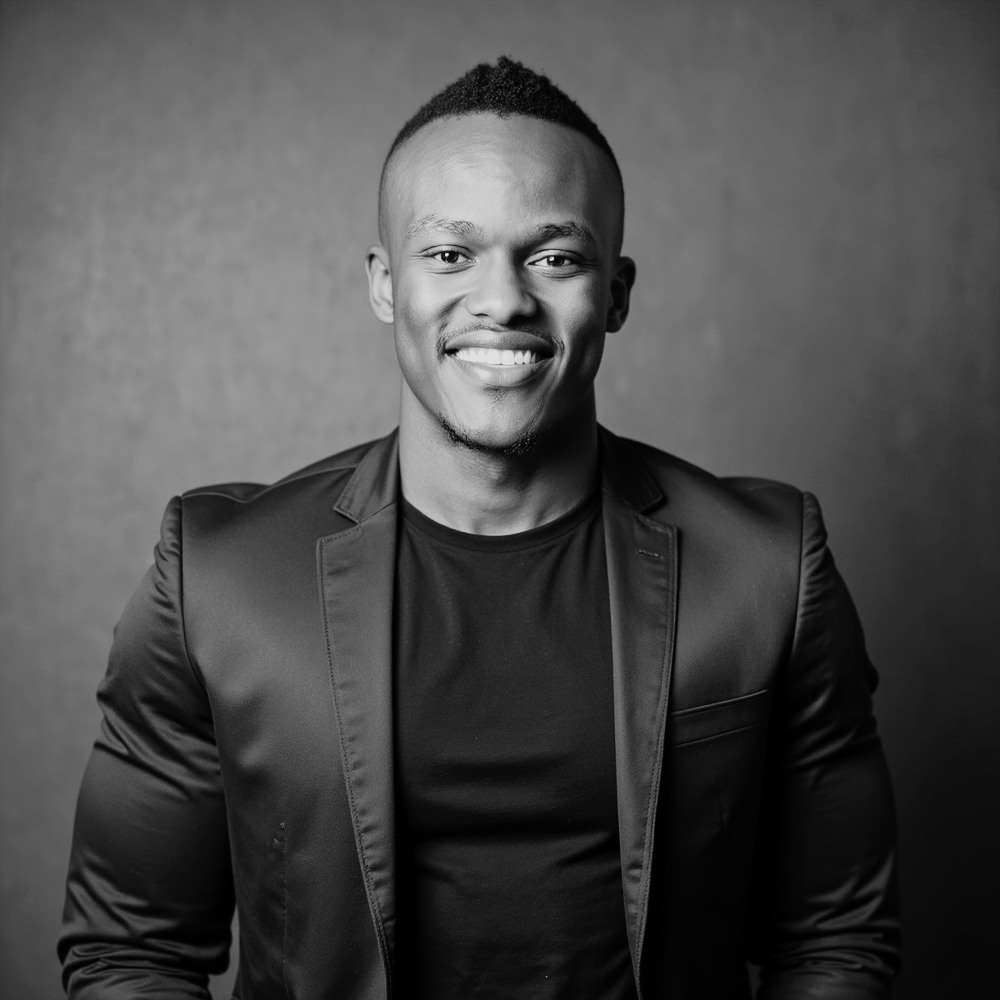
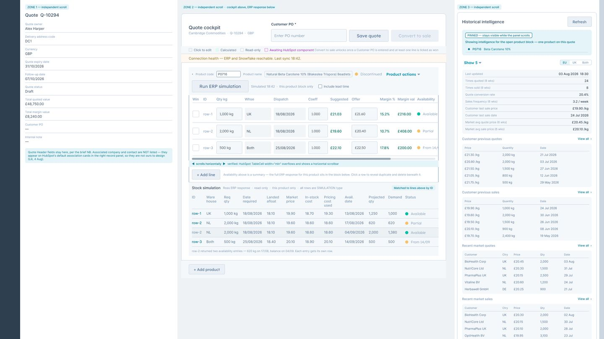
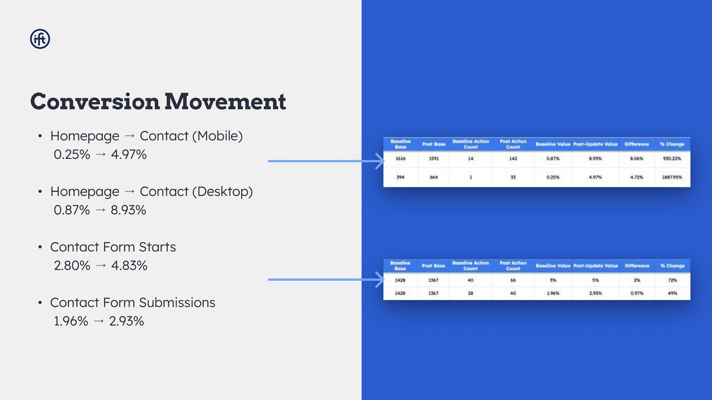
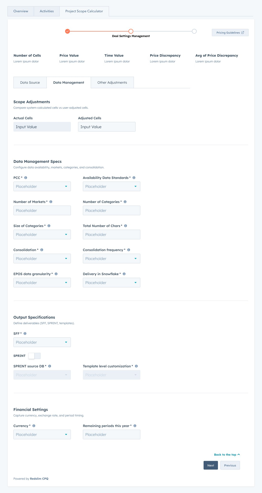
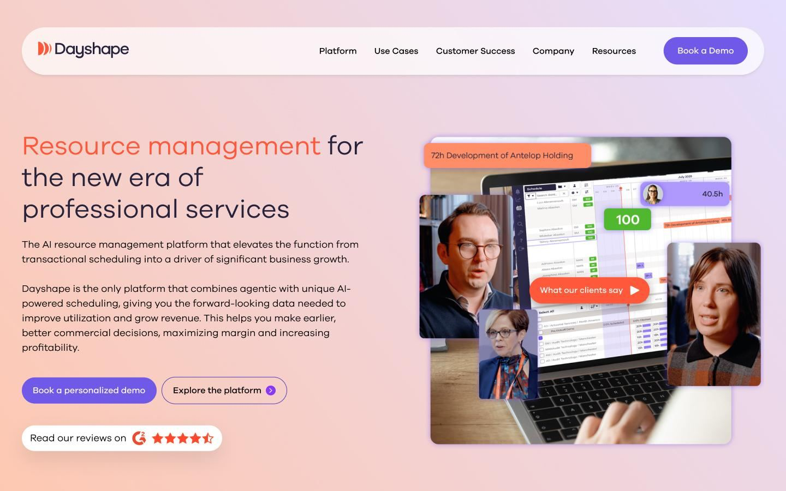
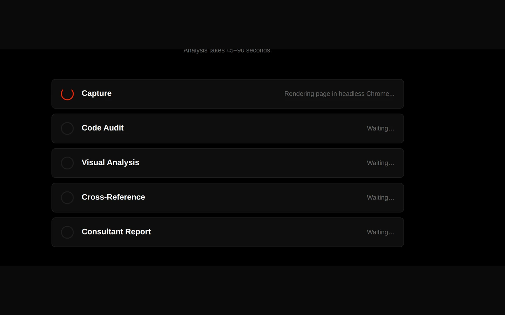
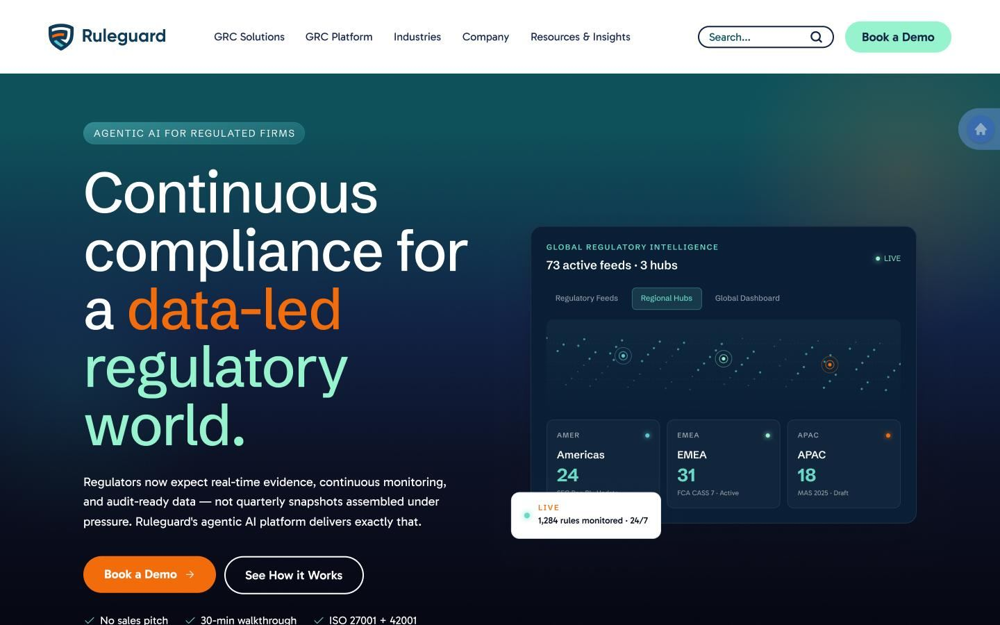
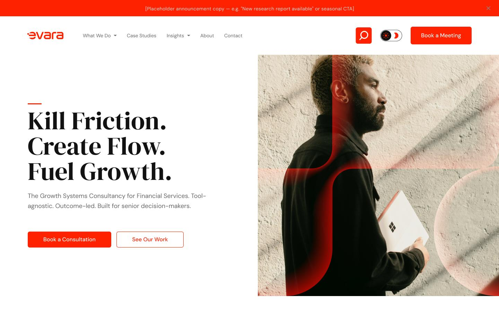
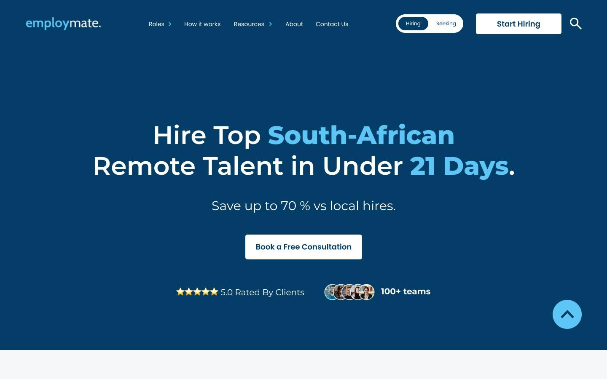

Sizo Manana
I research, design and optimise digital products, then measure whether they work.
My work sits across three connected disciplines: UX research and strategy, product and interface design, and conversion optimisation. Most of it has been in B2B SaaS, fintech and financial services.
Explore the work below: a complex quoting product, research that shaped a website redesign, and a measured conversion programme. Each case explains my contribution and what the evidence can support.
- UX research & strategy
- Product design
- UI & interaction design
- CRO & experimentation
- Analytics & instrumentation
- Enterprise UX

Research / Product / OptimisationComplex workflows and interface systems
Explore Cambridge: enterprise quoting, states, constraints and developer handoff.
02 · UX RESEARCHFrom behavioural evidence to design direction
Explore Redslim research: persona-informed segmentation, hypotheses and a phased roadmap.
03 · CRODesign changes and commercial measurement
Explore BSO: funnel diagnosis, redesign, instrumentation and post-launch analysis.
Three projects that explain the range
Start with the type of work you are hiring for. Each project connects the problem, my decisions and the outcome.

Enterprise product design
A quoting cockpit inside a platform with fixed UI constraints
43 frames covering a CPQ lifecycle for a bulk ingredient supplier, designed from a fixed component library with live ERP and warehouse data.
Product design case study
Persona-informed UX research
Turning buyer behaviour into a redesign roadmap
Research for a data-harmonisation business, translating existing personas and observed behaviour into prioritised recommendations. A separate agency delivered the redesign.
Research case study

End-to-end CRO programme
Redesigning a funnel, then reporting what changed
Desktop homepage-to-contact conversion moved from 0.87% to 8.93%, with the case study separating the impressive number from the caveats behind it.
CRO programme case study

Redslim CPQ · Shipped product design
Turning 50 pricing rules into a CRM product
A separate Redslim engagement: a three-step quotation tool designed around HubSpot constraints, with visible overrides and searchable pricing guidance.
Read CPQ case study

CRO programme strategy
The blended number was hiding the real problem
11.6% overall form completion versus 35% in the target-customer segment. A comparison between audiences, not a measured uplift, that changed the roadmap.
Read case study

AI-assisted product prototype
PINE: making the first CRO audit pass faster
A human-in-the-loop prototype with verification and accountability retained by the consultant.
Read prototype case study

CRO programme design and instrumentation
Reframing a regtech website around buyer intent
Research, strategic recommendation, site restructuring and a redesign for a financial-services compliance platform.
Read case study

Brand, IA and design system
Rebranding the consultancy I worked for
Low-fidelity architecture through high-fidelity design and build, including navigation, templates and reusable systems.
Read case study

CRO and messaging
Putting the offer in the headline
A recruitment experience where the country, timeframe and commercial saving were moved into the first decision point.
Read case study
Process evidence
Wireframes, IA and structure before styling
A closer look at the low-fidelity thinking that sits underneath the polished case-study screens.
See wireframes
How evidence becomes a design decision
The common thread is decision quality. This is the operating model I use for end-to-end CRO programmes and for individual optimisation workstreams when an engagement covers only part of the lifecycle.
Product and UX
Information architecture, user flows, wireframing, interface hierarchy, component systems, interaction states, responsive behaviour, accessibility considerations and developer handoff.
Research and optimisation
End-to-end CRO programme strategy and delivery, including heuristic evaluation, behavioural analytics, session recordings, market and vertical research, segmentation, hypotheses, prioritisation, GA4/GTM instrumentation, experimentation and post-launch validation.
A commercially minded design practice
I moved from finance administration into digital design, lead-generation work, UX/UI, CRO and enterprise product design. That path is why I naturally connect interface decisions to business outcomes.
I am most useful in teams where the role crosses boundaries: messy problem framing, stakeholder context, complex interfaces, optimisation work and the evidence needed to defend a decision.
Current positioning
- Best fit: CRO/Optimisation Manager or Consultant, UX Consultant, Product Designer and Growth/Product Optimisation roles.
- Industries: B2B SaaS, fintech, financial services and other complex service environments.
- Location: Johannesburg, South Africa, with UK/EU working-hours experience.